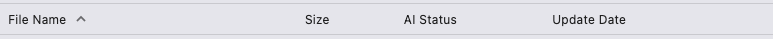
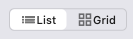

|
ailia DX Insight 1.0.0
|
The file view is displayed in search and document applications.
Clicking on the item names arranged at the top of the file view changes the order of the files.

Clicking "File Name" sorts the files in alphabetical order (A-Z/Z-A).
Clicking "Size" sorts the files in order of size, from largest to smallest or smallest to largest.
Clicking "AI Status" sorts the files by whether they are indexed or not.
Clicking "Update Date" sorts the files by their update dates, from newest to oldest or oldest to newest.
By clicking the display mode button at the top right of the file view, you can change the way files are displayed (list view/grid view).
In grid view, image file thumbnails are arranged in a grid.

You can add frequently accessed folders to your bookmarks.
This operation does not delete the actual folder.